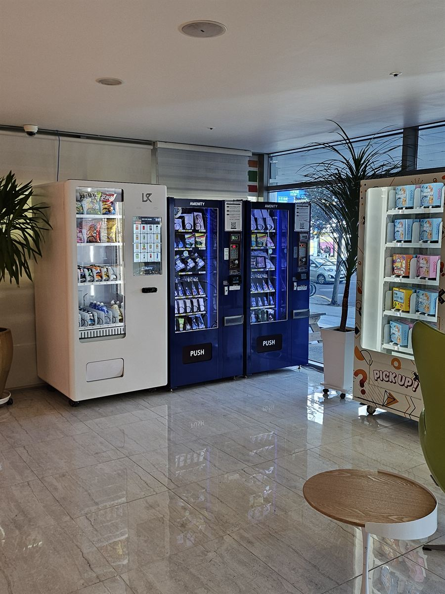

남원 무인자판기 설치 완료 — 숙박업소 로비 어메니티·음료 자판기

숙박업은 손님이 찾는 시간과 사람이 있는 시간이 어긋나는 업종입니다. 칫솔을 깜빡했다는 전화, 맥주 한 캔 없냐는 질문은 대부분 밤 11시 넘어 들어옵니다. 그렇다고 그 몇 건 때문에 프런트에 밤새 사람을 세워 둘 수는 없습니다. 위 사진은 그 시간대를 기계에 맡긴 현장입니다. 로비 한쪽 벽을 따라 어메니티 자판기 두 대와 냉장 음료·간식 자판기 한 대를 나란히 세웠습니다.
어떻게 구성했나
구성을 나눈 기준은 급한 물건과 심심해서 사는 물건입니다. 파란 기계 두 대에는 칫솔·면도기·세면도구처럼 없으면 당장 곤란한 것을 넣었습니다. 이쪽은 가격보다 "지금 살 수 있느냐"가 전부라 품목 수를 넓게 잡았습니다. 반대로 흰 기계에는 생수·탄산·이온음료와 과자를 넣었는데, 여긴 잘 나가는 서너 종을 여러 칸에 겹쳐 채웠습니다. 종류를 늘리는 것보다 안 비는 게 중요한 자리이기 때문입니다.
자리는 엘리베이터로 가는 동선 위로 잡았습니다. 투숙객은 체크인하고 방으로 올라갈 때, 그리고 나갈 때 반드시 이 앞을 지납니다. 로비 구석에 몰아넣으면 "있는 줄도 몰랐다"는 말이 나오는데, 동선 위에 두면 안내문을 붙이지 않아도 알아서 봅니다.
앱으로 원격 관리, 설치는 반나절
숙박업소는 사장님이 상주하지 않는 경우가 많습니다. 그래서 재고를 눈으로 세는 방식은 오래 못 갑니다. 이 기계는 칸마다 몇 개 남았는지 앱에 숫자로 뜨고, 다 팔린 칸은 따로 표시됩니다. 주말이나 축제 기간처럼 투숙이 몰리는 날 전에 미리 채워 두면 되고, 어떤 품목이 몇 시에 나가는지 기록이 쌓여 다음 발주가 쉬워집니다.
결제는 카드와 간편결제만 받습니다. 현금을 뺀 이유는 단순합니다. 야간에 동전이 걸리거나 거스름돈이 떨어지면 결국 사장님이 새벽에 나와야 하기 때문입니다. 무인으로 둘 거라면 현금을 안 받는 쪽이 사고가 적습니다. 설치에 필요한 건 220V 콘센트 한 개와 기계 폭만큼의 벽면입니다. 배송·수평 조정·상품 적재·시험 결제까지 반나절이면 끝나고, 체크아웃이 끝난 오전에 들어가면 그날 영업에 지장이 없습니다.
구매·임대·렌탈 모두 가능
숙박업은 성수기와 비수기 차이가 큰 업종이라 비용을 어떻게 나눌지가 고민이 됩니다. 건물을 직접 소유하시고 계속 운영하실 거면 구매가 총비용 면에서 가장 유리합니다. 반대로 인수한 지 얼마 안 됐거나 "우리 손님이 자판기에서 실제로 사긴 할까"를 먼저 확인하고 싶으시면 임대·렌탈로 몇 달 돌려 보셔도 됩니다. 어메니티 한 대로 시작했다가 반응을 보고 음료를 더 들이는 순서도 흔합니다. 어느 쪽이든 설치비는 무료이고 세금계산서도 발행됩니다. 놓을 자리 사진과 가로·세로·높이 치수를 보내 주시면 들어갈 기종과 칸 구성을 먼저 잡아 보내 드립니다.
남원 무인자판기 상담은 무료
광한루원 주변 죽항동·천거동 숙박·상가 밀집지, 동충동·도통동 중심가, 남원역과 향교동·왕정동 일대, 노암동·금동 주거지, 지리산 들머리인 산내면·운봉읍·인월면 펜션 권역, 주천면·사매면·보절면까지 남원 전역에 방문합니다. 남원은 관광으로 오가는 손님과 머무는 주민이 섞여 있는 도시라 자리마다 들어갈 품목이 꽤 다릅니다. 숙박업소뿐 아니라 무인 스터디카페, 셀프빨래방, 캠핑장·야영장 관리동, 사무실 건물 1층, 체육시설 입구처럼 머무는 사람은 있는데 파는 사람이 없는 자리면 한 대로 충분히 시작할 수 있습니다. 현장을 보고 자리와 품목까지 같이 잡아 드리며, 상담과 견적은 무료입니다.
※ 사진은 H포스가 시공한 설치 사례이며, 글에 적힌 지역의 현장 사진은 아닙니다.
📞 남원 무인자판기 설치 상담 010-6832-1994